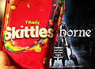

The Chalice Dungeon feature in Bloodborne includes both standard dungeons as well as procedurally-generated dungeons. Both types of dungeons can be played offline or online with other players, but generating new dungeons requires connecting the game online once to download required data. You can also publish your Chalice Dungeons online to share with other players, and download dungeons created by other Bloodborne players. Shared Chalice Dungeons are codes to the creations of other players. An active Playstation Plus subscription is required to share or download chalice dungeon data.
- You must have made a chalice of the same type including offerings before you can search and join any chalice (this does not apply to the short chalice). Do not worry, materials won't be consumed again in search mode. Please note that if you have made a root dungeon of any type with all offerings (cursed, rotted, and fetid), you can join any root dungeon of that type regardless of the combination of offerings.
- The wiki has specialized Defiled Chalice (b4bi2s3n) and Great Pthumeru Ihyll Chalice (egn5rrdj). Use these to maximize chances to get help. Use Official Wiki Chalices for other non-root codes.
- See Chalice Dungeon Weapons for a table with what drops where.
| Date | PSN ID | Glyph | Chalice Used | Offerings Used | Layer 1 Loot | Layer 2 Loot | Layer 3 Loot | Layer 4 Loot | Notes |
|---|---|---|---|---|---|---|---|---|---|
| 5 April, 2015 | Yoshie1995 | up6tgug5 | Sinister Lower Loran Root Chalice | Ritual Blood (5) Blooming Coldblood Flower Tomb Mold (5) Red Jelly |
Ritual Material Anti-Clockwise Metamorphosis (20% bonus Stamina) |
Ritual Material Lost Stake Driver |
Ritual Material Uncanny BurialBlade Lost Beast Claw |
Yoshi1995's Sinister Lower Loran Root Chalice Info | |
| 27 March 2015 | TheClovenOne | 3zuzathw | Sinister Lower Phtumeru RootChalice | Uncanny Kirkhammer and a Lost Saw Cleaver can be found | |||||
| 27 March, 2015 | FreeQuebec86 | 462yygcg | Uncanny Saw Cleaver | Fast/Easy . First bonus room to the left, you don't even have to start Layer 1. Dungeon Info | |||||
| 28 March, 2015 | LegendaryBlade | h6u6x2jy | Pthumerian dungeon for low level characters, extremely well laid out. Great challenging enemy and trap locations, feels almost premade. Not great loot though | ||||||
| 28 March, 2015 | Anedime | wg6c9sib | Central Pthumeru Root Chalice | Fetid | Uncanny Threaded Cane | Fetid Central Pthumerian Uncanny Threaded Cane first bonus room second floor. Info |
|||
| 29 March 2015 | Bs-Mystik | h6nav3wb | Ailing Loran Root Chalice | Field : Airing Loran Rite : Special Loot : Lost Rifle Spear |
|||||
| 29 March 2015 | Unknown | 5543imxn | Pthumeru Ihyll Root Chalice | Lost Burial Blade, Lost Reiterpallasch, 4 Layer Depth 5 Pthumeru Ihyll Root Chalice, Note that this code is from another forum, and I haven't checked it yet. Still getting a character build set up and working toward the requirements. |
|||||
| 30 March 2015 | Fulcrum96 | aecve32n | Isz Root Chalice | Lost Kirkhammer | Ludwig's Lost Holy Blade | Blood Rock | Isz Root Chalice, Depth 5. Lost Kirkhammer in a chest on the first layer in the optional area, Ludwig's Lost Holy Blade on the second layer optional area. 3rd layers additional area has a Blood Rock. In addition I've found Ritual Blood (5)'s, Pearl Slugs, Great One's Wisdom and a Yellow Backbone. | ||
| 31 March 2015 | LONER1 | evuke3qg | Ailing Loran Root Chalice | Fetid | Lost Hunter Axe | Uncanny Tonitrus | Uncanny Beast Claw | Fetid Ailing Loran. | |
| 31 March 2015 | LONER1 | rih2kkuw | Rotted | Logarius' Uncanny Wheel | Rotted Pthumerian Defilement. Its in Layer 3, swamp area theres a door all the way at the end of the wooden planks. | ||||
| 31 March 2015 | Arcerinex | xk329uc8 | Lower Hintertomb Root Chalice | Fetid Rotted | Uncanny Stake Driver | Bonus area before boss fight. | |||
| 1 April 2015 | LONER1 | syrsqjhb | Sinister Isz Root Chalice | Lost Kirkhammer | Lost Threaded Cane | Ludwig's Lost Holy Blade | Sinister Isz Gravestone, one weapon per layer | ||
| 2 April 2015 | Rafahil | zc8654cz | Lower Pthumeru Root Chalice | Lost Saw Cleaver | Uncanny Rifle Spear | Uncanny Kirkhammer | Lower Ptumerian Labyrinth. Depth 3. Very easy except for the last boss fire dog, but you don't need to kill him anyway. It's quite a low requirement dungeon for the amazing loot you get so almost everyone can do it. | ||
| 2 April 2015 | MadBater | sjhewj9u | Hintertomb Root Chalice | Fetid | Uncanny Hunter Axe | Fetid Hintertomb depth 2 | |||
| 3 April 2015 | Ham_Szynka | 7r2q7gs5 | Lower Loran Root Chalice | Fetid Rotted | Lost Stake Driver | Lost Beast Claw | Easy bosses | ||
| 3 April 2015 | Nylus-Sutnak | gc2nhw6u | Sinister Isz Root Chalice | Ludwig's Lost Holy Blade | Very easy to get Ludwig's Lost Holy Blade, in bonus room before starting the first layer. | ||||
| 3 April 2015 | TheDarknessZero | rgk6qk9a | Cursed Ptumerian Defilement | Uncanny Chikage | Bonus room before layer one starts. | ||||
| 3 April 2015 | staysis | 5c6s5de5 | Lower Loran Root Chalice | Rotted | Uncanny Blade of Mercy | Easy bosses | |||
| 3 April 2015 | DuctDonk | gz9mmj7y | Lower Loran Root Chalice | Fetid Rotted | Clawmark Stunning Deep Sea Rune | 30% Clawmark and 300 Resist Stunning Deep Sea Rune | |||
| 4 April, 2015 | Tephlonx5 | vxi64jjt | Lower Pthumerian Chalice | Fetid | Lost Saw Spear | Uncanny Kirkhammer | Dungeon Info | ||
| 6 April, 2015 | Zabbitt92 | 4rjs6399 | Pthumeru Root Chalice | N/A | Uncanny Saw Cleaver | ||||
| 6 April, 2015 | M37_Falcon_Punch | nryuyh3w | Pthumeru Ihyll Root Chalice | Fetid Rotted | Lost Reiterpallasch | Blood Rock |
|
||
| 6 April, 2015 | Thanatos6293 | jrwffkyp | Pthumeru Ihyll Root Chalice | None | Blood Rock | Oedon Writhe (+3 qs on visceral) | Lake | The bosses encountered here are: The Man-Eater Boar, The Beat-Possessed Soul, and the Pthumerian Descendant. There's a lot of Ritual Blood (5) and Tomb Mold (5) here ripe for plundering. | |
| 6 April, 2015 | M37_Falcon_Punch | kmcwckhw | Isz Root Chalice | Fetid Rotted | Great Lake(+5% damage reduction from all sources) | Deep Sea (+300 frenzy resistance) | The Deep sea rune is not found in a bonus room in the 3rd layer. Bosses are the 3 watchers, Celestial emissary, and Rom. | ||
| 7 April, 2015 | Rolingachu (Not mine, just sharing) | fmu9qx9g | Isz Root Chalice | Rotted | Blood Rock |
Lost Threaded Cane |
The blood Rocks are found on a chest on layer 2. The Lost Threaded Cane is found in a chest on layer 3. Bosses are: Undead Giant, Guardian of the old gods, Amygdala and Ebrietas. | ||
| 8 April, 2015 |
Raikagu | rg56w9w8 | Pthumeru Ihyll Root | Fetid Rotted | Communion (+5 Blood Vials) Lost Reiterpallasch |
Lake(+7% damage reduction) | Lost Blade of Mercy | Layer One boss Beast Possessed Soul. Layer two boss Pthumerian Descendant. Lake rune is located in layer two, bonus room in the middle section. |
|
| 8 April, 2015 |
Scudman_Omega | 5bfq7tyk | Pthumeru Ihyll Root Chalice | Fetid | Ring of Betrothal | Lost Chikage |
|
||
| 9 April, 2015 |
Zack Niteblade | euna35ev | Lower Hintertomb Root Chalice | Fetid | Uncanny Stakedriver |
|
|||
| 10 April, 2015 |
AyzZai | 8bafmefj | Lower Root Loran Chalice | Fetid Rotted Cursed |
Clawmark (30% Boost Visceral Attack) |
Beast (100% Boost Transformation) |
Cant really remember which layer got the Clawmark rune but definitely not layer 3. Just a vid on the Beast Rune Stat |
||
| 11/04/15 | WhyteMajik | fwvrhcgf | Isz Root Chalice | Fetid, Rotted | Great Lake (5% DMG reduction to all) | TBD | TBD |
|
|
| 11/18/15 | M37_Falcon_Punch | 834jfqmn | Pthumeru Ihyll root Chalice | Fetid Rotted Cursed | 4 layers, great potential for cursed blood gem farming for the first layer. Found 2 scurrying beasts on all floors except the fourth. Bosses are the 3 watchers, man-eater boar, headless bloodletting beast, and sickle wielding Pthumeru Elder (Descendant). | ||||
| 11/04/15 | Zamarneim | 9p4i7it9 | Lower Hintertomb Root Chalice | Fetid | Stunning Deep Sea Rune (+100 rapid poison resistance) |
Uncanny Stake Driver | Stunning Deep Sea Rune is in layer 2, 1st bonus area. Uncanny Stake Driver is in layer 3, 1st bonus area. |
||
| April 21,2015 | JarthMader_ | 5vbj9dnk | Lower Ailing Loran Root Chalice | None | Blood Rock | Clawmark and Beast | Anti-Clockwise Metamorphosis | First two bosses are easy, Beast-possessed Soul and Keeper of the Old Lords. Last boss is Abhorrent Beast. There are actually two coffins on the second floor, one has Clawmark and the other has a Great One's Wisdom (which may actually be a Beast rune according to one of the comments below). | |
| 4/22/2015 | Glyph for PVP | hizzngr3 | Pthumeru Root Chalice | None | This chalice is for pvp. A large portion of the community use it for an optional pvp arena inside the chalice. Link to information video with more info in the description on what to do below: | ||||
| 4/24/2015 | Xeno_future | u37b5h48 | Isz Root Chalice | Fetid Rotted Cursed | Lost Threaded Cane, Eye Rune max | Arcane Lake Rune Max | Blood Rock | Bosses are: Undead Giant, Brainsucker and Ebrietas, Daughter of the Cosmos. | |
| 4/25/2015 | DoctorNockers | 3zz6vgtk | Hintertomb Root Chalice | Fetid | Blood Stone Chunk | Frenzied Colblood (9) | Bosses: Beast (fire-wielding), Boar and Fire Watchdog. There is an illusion wall on layer 2. | ||
| 4/26/2015 | M37_Falcon_Punch | jvz8469j | Lower Loran Root Chalice | Fetid Rotted Cursed | 4 layers, Bosses are blood starved beast, Loran silver beast, Amygdala, and Pthumeru Elder. Blood starved beast drops powerful circular blood attack bloodgems for firearms. Amygdala has a chance to drop level 20 cursed waning nourishing bloodgems which increases attack. There is also quite a bit of ritual materials such as bastard of loran and sage hair found throughout the dungeon. | ||||
| 9/23/15 | UltraViolet371 | vgh3p98u | Lower Loran Root Chalice | Rotted | Lost Tonitrus, Lost Stake Driver | Dissipating Lake | Two Lost weapons are tresures in bonus areas before and after the main area of Layer 1. Bosses are Loran Silverbeast, Undead Giant (cannon), and Amygdala. |
| 4/27/15 | hyperphania | p9pkfx2k | Isz Root Chalice | Fetid Rotted Cursed |
Blood Rock | TBD | TBD | ||
| 5/2/15 | Hypospadias | yd3e93ac | Isz Root Chalice | Fetid Rotted Curse | Eye Rune (max) | Great Lake or Arcane Lake(?) | The two runes are in the bonus areas (pre 1-2). The main thing is this is an easy way to get Eye which is in the bonus area before level one. Its in the room with the brain sucker. I can't remember if the 2nd rune was Great Lake or Great Deep Sea. It is found through a door left at the top of the stairs leading to the upper balcony part of the courtyard. The bonus area before 3 appears to be bugged. Bosses Pig, Brain Sucker, and Ebrietas. Note: on my second play through this dungeon, I got Arcane Lake for the 2nd rune (which I didn't the first time). | ||
| 5/5/15 | 5kum4jin | Cursed and Defiled | Fetid, Rotted | Blood Rapture (max level) | Sage Hair (pre-lantern) Cursed Tempering Damp Blood Gem (pre-boss) |
Uncanny Logarius Wheel | Layer 1 Boss: Beast-possessed Soul Layer 2 Boss: Boar (with good drop) |
||
| May 7, 2015 | Phisc | xy8abwm9 | Cursed and Defiled Root Chalice | None | Uncanny Logarius Wheel | Uncanny Chikage | Blood Rapture | Layer 1 Boss: Keeper of the Old Lords Layer 2 Boss: Maneater Boar Layer 3 Boss: Amygdala The Chikage is guarded by a fire-throwing witch, a madman, and several spiders. Use the trees for cover while drawing out the spiders one by one. Close to the room with the chikage is a small room blocked by a chest facing the wrong way. The chest can be destroyed though. The area with the Blood Rapture, which is located behind the boss door, is also connected to the main area, which means you can skip the lever. |
|
| May 10, 2015 | Phisc | 54yek4a2 | Great Isz | None | Great Deep Sea +150 | Lost Threaded Cane | Blood Rock | Layer 1 Boss: Undead Giant (Cannon) Layer 2 Boss: Watchers (The boss door is guarded by a hunter with Ludwig's Blade) Layer 3 Boss: Ebrietas |
|
| May 10, 2015 | Phisc | fxx8phm9 | Lower Loran | None | Lost Tonitrus | Lost Beast Claw Uncanny Blade of Mercy |
Stunning Deep Sea +300 | Beast+100 | Layer 1 Boss: Watchdog Layer 2 Boss: Silverbeast Layer 3 Boss: Pthumerian Elder Layer 4 Boss: Darkbeast |
| May 13, 2015 | TennisFreak2009 | awwkvgwv | Great Isz | None | Lost Kirkhammer | Great Deep Sea +150 resist all types Arcane Lake +10% Arcane dmg reduction |
Layer 1: Undead Giant (Cannon) Layer 2: Brainsucker Layer 3: Amygdala |
||
| May 24, 2015 | Polmon | u4y8ekjg | Lower Loran Root | Rotted Fetid | Uncanny Blades of Mercy | Uncanny Burial Blade | Blood Rock | Can't remember the bosses perfectly; I think it was Merciless Watchers, Beast-Possessed Soul and Bloodletting Beast. | |
| June 3rd, 2015 | Yoshie1995 | jzxquzdc | Sinister Pthumeru Ihyll | Sinister | Third Tier Heir Rune | Third Tier Lake Rune | Blood Rock (if not collected already) | Layer 1: Beast-Possessed Soul Layer 2: Maneater Boar Later 3: Pthumerian Elder (Side note, this can be used for high level PvP if one so chooses due to how late this chalice is recieved.) |
|
| June 17th 2015 | Stromsgard | sb6dmtpy | Lower Loran Root | Rotted | Lost Stake Driver | Clear Deep Sea (+300 slow poison res) & Beastclaw (+30% v.Atack damage) | Lost Tonitus | Layer 1: Beast-Possessed Soul Layer 2: Blood Starved Beast Layer 3: Loran Darkbeast Great dungeon for fans of beasts. |
|
| November 1st 2015 |
ID: Guidafunkyman Name: S.D. Plissken |
ezmwx2rh | Pthumeru Ihyll | FRC | Lost Burial Blade Oedon Writhe +3 |
4 Yellow Backbones Sage's Hair |
Lost Chikage | Layer 1: The Undead Giant, who drops good Adept Gems. Layer 2: The Boar Layer 3: The Bloodtingle Beast This dungeon is a good challenge too. ;-) |
|
| November 28th 2015 | ID: TwilightTitan | 3wnsz2pa | Isz Root Chalice | Fetid Rotted |
ALL DLC Weapons (Lost & Uncanny versions only) | TBD | TBD | The very first branching path from the beginning, unbelievable find if you just starting the DLC. Each weapon is 16k echoes to buy, Haven't progressed past the first floor so feel free to add in what you find. Enjoy :D |
|
| December 10th, 2015 |
ID: Akseptance | e6eibcsk | Pthumeru Ihyll Root Chalice |
Fetid Rotted Cursed |
Communion +5 Ritual Blood (5)'s Tomb Mold (5)'s Bloodshot Eyeball Sage's Hair Yellow Backbones |
Yellow Backbone | Layer 1: The first two enemies you encounter are hunters. They are both in the same room and can kill you in two hits, so be careful. They both wear full Bone Ash and use a Hunter's Pistol, Saw Spear, and use Fire Paper. With no Moon runes, they gave 74,000 echoes, per kill, each. Boss: Maneater Boar - Drops a random gem and 1 Blood Stone Chunk. Layer 2: Underneath the elevator are two Witches of Hemwick. Up the elevator is an invisible wall and two doors. The door opposite of the 2nd floor elevator button is the one that leads to the Communion +5 rune. Be careful, the room with the rune has multiple spiders, a Labyrinth Ritekeeper, and a Labyrinth Madman. Boss: Merciless Watchers - Drops a random gem and 1 Blood Stone Chunk. Layer 3: *WARNING* Frame rate drastically decreases in the elevator room due to there being five poison floor lamps underneath the elevator. Frame rate returns to normal after they have been destroyed. Unfortunately, this layer has nothing special. There is another Witch of Hemwick in this layer. Boss: Bloodletting Beast (Headless version) - Drops a random gem and two Blood Stone Chunks. Multiple high tier cursed Blood Gems drop from the enemies on all floors if your discovery is high enough. I received about 15 blood gems with a discovery of 194. |
||
| December 11th, 2015 | ID: Akseptance | g3y4e742 | Pthumeru Ihyll Root Chalice | Fetid Rotted Cursed |
Ritual Blood (5)'s Bath Messengers (All DLC Uncanny and Lost only) 12/Sages Hair |
Ritual Blood (5)'s Lost Burial Blade Great One's Cold Blood x2 |
Layer 1: Has a Bone Ash Hunter. Boss: Pthumerian Descendant - Drops a random gem. Optional area after the boss has Ritual Blood (5)'s, a Great One's Wisdom, and a Cainhurst Hunter wielding Chikage and Evelyn. Layer 2: First enemies encountered is a tag team consisting of a Maneater Boar and a Bone Ash Hunter. Bath Messengers are up the ladder to the right, through the door to the left, past the Bell Maiden. Boss: Maneater Boar - Drops a random gem and 2 Blood Stone Chunks. Layer 3: This floor has a Beast Possessed Soul, a Bone Ash Hunter, and a Pthumerian Descendant (one of each) as normal enemies. Boss: Bloodletting Beast (with head, so be careful of it's grab attack) - Drops a random gem. |
||
| December 11th, 2015 | ID: Akseptance | y5wesi8v | Lower Ailing Loran Root Chalice | Fetid Rotted Cursed |
Uncanny Burial Blade Ritual Blood (5)'s Clear Deep Sea +300 Slow Poison Resist |
Loran Bastards Sages Hair Ritual Blood (5)'s Uncanny Blades of Mercy |
Loran Bastards Dissipating Lake +10% Bolt Reduction Stunning Deep Sea +300 Rapid Poison Resist |
Loran Bastards Ritual Blood (5)'s |
Layer 1: Boss: Beast Possessed Soul - Drops a random gem and 2 Blood Stone Chunks. Optional area after the boss contains the Clear Deep Sea rune. Layer 2: There is a Beast Claw Hunter in front of the boss door. Boss: Keeper of the Old Lords - Drops a random gem and 1 Blood Stone Chunk. Layer 3: Boss: Amygdala - Drops a random gem and 2 Blood Stone Chunks. (The arena should look somewhat like a chapel. Position him at the bottom of the stairs, while you're on top of the stairs. Very easy to hit his head from here, even with shorter weapons.) Layer 4: A very straight forward layer. Kill enemies, find the switch, head to the boss. Boss: Abhorrent Beast - Drops a random gem and 2 Blood Stone Chunks. I unfortunately forgot to write down where the Dissipating Lake and Stunning Deep Sea runes are exactly located. They might be in the main dungeon layer, or in an optional area. I do remember finding them either on layer 2 or 3 (optional areas included). |
| January 25th, 2016 | ID: KaptinSkorge | zb2vswup | Sinsister Pthumeru Ihyll Chalice | Sinister | Lost Chikage | Clockwise Metamorphosis (15% health) | Logarius's Lost Wheel Heir (+50% blood echoes from viscerals) Blood Rock |
Layer 1: Lost Chikage is before the 1st layer lantern in the bonus room on the right, once you're down the stairs, head to a doorway on the opposite side mid-way of the giant hall. Now head up the stairs and its in the room across the bridge, there should be a snatcher patrolling it. The boss on this layer is Merciless Watchers. Layer 2: Clockwise Metamorphosis +15% is in the bonus room before 2nd layer lantern. Once opening the door you'll climb up a ladder to a room full of spiders, head down to the door on the far left side of the room, then head to the very bottom of all the stairs. You should now end up in a room full of grave stones and a draw bridge above, enter the door way on the right side and there is fat rolling mace guy guarding it. The Boss on this layer is Maneater Boar. Layer 3: Logarius' lost wheel is before the 3rd layer lantern in the bonus room on the right, head down the stairs to a circular room, take a right to a grave stone room, then head to the left passage way. Now head up all the stairs, then take the right door in the next room. You'll end up in the grave stone room again (2nd level), jump down and enter the door on the left to a treasure room. The "Heir rune" is in the main area after the 3rd layer lantern, take the left side door, then take another left, then drop down and take a left once again, you'll come across a room full of enemies. After that head up the ladder to a room with a necromancer and continue through the door in front of you, then take a right, then a left. A madman will be guarding the rune. The blood rock is through the door on the left side, after the lever door. Just head dead straight through all the doors until the last room, head up the stairs and there is a flaming greatsword guy guarding it. The boss on this layer is Pthumerian Elder. |
|
| March 1st, 2016 | ID: Wasted07 | x7u237ae | Sinister Pthumeru Ihyll Chalice |
Sinister | Lost Burial Blade | Lost Reiterpallasch | Blood Rock Heir (+50% blood echoes from viscerals) Blood Rock (Layer 3 boss drops it) |
Please make sure to specify which bosses are present in said dungeons and, if the location of the items is easily missable (behind an illusory wall for example), give off their location in a more specific manner.
 Anonymous
Anonymous
- Anonymous
- Anonymous
I scoured all three Bloodborne wikis as well as Reddit for glyphs and the details about those glyphs. Then I checked every single one of them to see if they were still active, some of them twice just to make sure they were really dead. This is what I came up with; the fastest paths to all the Runes and Lost / Uncanny weapons as well as all the gem farming glyphs that are still active. Enjoy!
- Anonymous
Lower Loran Chalice
Glyph: 7bxnbj63
Layer 1 bonus room with max beast rune in coffin.
- Anonymous
Fetid Central Pthemaru Chalice
Glyph: v4kisnn
Layer 3 bonus room bath messenger sells uncanny and lost dlc trick weapons.
- Anonymous
Can somebody see about adding the glyphs from the weapons? Things like the "ydit83ur" for the uncanny threaded cane and such?
- Anonymous
Okay i Really need some Help here....i play offline....i have all my chalice...but i cant some how not reach depth 5...only depth 4 a couple of times and i have About 400 times try without reaching it...what am i doing Wrong???
- Anonymous
Pthmerian Defilement (Depth 4). It in the bonus room at Layer 1 I think. The Code is: rgk6qk9a
rotted lower Pthumerian chalice. The code is zczdwwuh. PSN is Corwynt-
- Anonymous
PSN ID: Arcerinex Lower Hintertomb Root Chalice Fetid Offering Rotted Offering Glyph: xk329uc8 Layer One Uncanny Stakedriver Layer Two Great One Coldblood (Gives 40k Echoes) Stunning Deep Sea Rune (+100 Rapid Poison Resist) BOSS - Keeper of the Old Lords Layer Three BOSS - Pthumerian Elder (Staff) Layer Four BOSS - Blood Starved Beast
- Anonymous
I'm not sure if this has been posted anywhere, I found in the Isz Standard Chalice on depth 5, (uasgmk3j) a really good blood farming spot. You need to get to layer 3, but once you're there, all you gotta do is farm the aliens and the werewolves in the first room, then use a hunter's mark to make them respawn. Timed my runs @lvl 150 I get roughly 90k blood, tons of blue elixirs, good farm for blood vials (werewolves) and good farm for quicksilver bullets! And you also get tons of tier 4 to 6 gems from those aliens!
- Anonymous
- MrLonghair
Leave your shared dungeons active on their tombstones or they will be forever lost. Try to edit or at least leave a guest message here so that we can learn which one is no longer active when you have to delete it.
I don't think it wise to post Pthumeru Chalice dungeons. Their the first dungeon, and there really isn't very much variation in their design. I could be wrong, though. I did all of the Pthumeru Chalice dungeons listed here, and none of them have really been any different.
Can someone help me, every time i went to scearch a dungeon it says that i didnt met the requirements and i have no idea what to do
I found this great site that is making a chalice dungeon database and it has an easy to use form. Here's the form https://docs.google.com/forms/d/1JOnV1SVNahBsSq5ahZ6fkxQ_DZV5VvbOoCZMpyxAfyI/viewform
The actual page with all the dungeons is here: https://docs.google.com/spreadsheets/d/18TVy5cDk6sNX0lc2dNQM2Q-SLv0_9QecQrtKR0sRb6Q/htmlview?sle=true#gid=1095946635#button-dungeon
- Anonymous
- Anonymous
I don't think this is entirely true. I can share my ones and I'm not on PS+ at all. Unless something's going off here. If you want to see for yourself I got a chalice open Glyph: c32jmeaa Central Pthumerian. Just to double check.
- Anonymous
I've done 3 blood rock glyphs and every time I get a Great Ones Wisdom instead of a blood rock. They must have patched it to not allow people to get blood rocks this way...
Can anyone confirm or deny wether or not chalice dungeon enemies/Bosses are any more difficult in NG+ than they are in Standard Game? Thanks Hunters.
- Anonymous
- Anonymous
you guys should add a section for ppl to list the requirments
- Anonymous
- Anonymous
Fetid Rotted Cursed Isz Root Dungeon. Chalice Glyph: gwsb3sxv Layer 1 (side dungeon) - Deep Sea Rune (+300 Frenzy Resist) Layer 3 (side dungeon) - Great Deep Sea Rune (+150 All Resist), Also found a Great One's Wisdom which may/may not be a Blood Rock. Layer 1 is also a great spot for farming Crescent and Triangle Blood Gems.
- Anonymous
- Anonymous
Has anyone found this rune? i really want it but no luck so far
- Anonymous
One of the chalices listed above has the max blood rapture rune listed for one of the levels but I always thought that this Rune and the Max Moon rune could only be got trough Eileen's quest and from the nightmare of Mensis in the main game. I thought these two were not included in the chalice loot list. Can anyone clarify?
- Anonymous
"You do not need Playstation Plus to download Dungeon Data" Eh... wut? You can't use glyphs in offline mode, and you can't use online mode if you don't have PS+. So you DO need a subscription to download chalice dungeon data.
I'd like to add a really good Pthumeru Ihyll Labyrinth I just got. It has one chest containing twelve Ritual Blood (5), a chest containing four Red Jelly, as well as four layers, meaning you get extra boss gems and upgrade materials. There was also a chest containing a Great One's Wisdom, meaning that it might contain a blood rock for those who haven't obtained one from Pthumeru.
Glyph: pkn2wf52
- Anonymous
Please help me with the defiled chalice its super hard I can't get through it and it would be a big help if you could help me add or message me yoshiseggs4 glyph code 976xxeqi
- Anonymous
kttqbh39
Chest on (I think) layer 2 has a Blood Rock
Level 3 boss is Amygdala who dropped Blood Rock and Nourishing Abyssal blood gem. (Obviously this drop is probably random).
- Anonymous
https://docs.google.com/spreadsheets/d/18_m-gFTK2iA6kobJKPg4l0lhavTp79jwz7nHi0sZps4/pubhtml
Hi, I can't modify the table so I give you the glyph of my Ihyll dungeon: m2kbhjqx, creator's name: Calvin Broadus.
I've just visited the 2 first floors, and at the first I found the formless oedon rule lvl 3 (+5 bullets) and at the second the clockwise metamorphosis lvl 3 (+15 HP).
- Anonymous
Sinister Pthumeru Ihyll loot: Formless Oedon (layer 1 side area) Logarius' Lost Wheel and Great One Coldblood (layer 3 main area) bosses: layer 1 - Undead Giant layer 2 - Maneater Boar layer 3 - Watchdog
- Anonymous
Chalice glyph 8c6uyna5 Has 3 layers Layer 1 has lost burial blade Layer 2 has blood rock Layer 3 has formless oedon tier 5 version (hold 5 QS more)
- Anonymous
Isz Chalice - Fetid, Rotted, Curse -Loots- Great Deep Sea (Layer 1 Pre-area) Great One's Wisdom (Layer 2 Pre-area; This is probably a rune or Blood Rock I already found prior) Bastard of Loran x10 (2 in layer 2, 4 in layer 3, 2 in layer 4 pre-area and 2 in layer 4) Great Lake (Layer 3 side area) Yellow Backbone x3 (Layer 4) -Bosses- Layer 1 - Undead Giant Layer 2 - Merciless Watchers Layer 3 - Ebriatas Layer 4 - Pthumerian Elder
- Anonymous
Chalice code: 4dtr8gjj Saw Spear is in first treasure room, Threaded Cane is in treasure room before third boss.
I'm a noob to this site and i'm not sure what i can and can't edit, can i edit the notes at the top of this page?
- Anonymous
Glyph is s6g3mh9g. Could anyone help me out with this boss? Would be greatly appreciated
- Anonymous
Lower hintertomb root. w2hder79v. Pthumerian elder in layer 3 drops the lvl 15 gem.
pthumeru ihyll with all offerings. in the first large room on layer 2 there are 2 hunters. The cainhurst hunter stays behind the wagon on the left, he drops Cursed Triangular gems (6) up to +26% physical damage(has rare chance to drop elemental gems). Then, far to the right of the entrance is the ashen hunter who drops Cursed Radial gems (6) up to +26% physical. She is facing the other end o the room and can easily be backstabbed. Both hunters drop 82k blood echoes.
- Anonymous
Help defeating blood starved beast at Ailing loran chalice. Fextralife glyph - gb4kmtzi
- Anonymous
Glyph 2ra9wj8d isz root chalice. Layer 1 in first optional area before main area
- Anonymous
How do I add it to spreadsheet, I wrote down all the specifics.
- Anonymous
Are they only available if the player who created them keeps the the chalice on their ritual alter? Or is it a case that once a chalice glyph is create, it will always be available?


Cursed Fetid Isz
Id: slschuga
Status: Open
Code: n9582pxe
Bosses: Watchers, Brainsucker, Ebrietas
Notable: This Ebrietas fight is particularly easy, at least imo. She's in a copy of Yharnam's room, and the central structure can block all of her attacks. She dropped a very nice waning cursed arcane gem and a blood rock - I don't know if the rock is dependent on anything, I've never seen a boss drop one before.
I plan on keeping this one on the tombstone for the forseeable in case anyone wants it. I don't know what other loot was available in the dungeon, I have all the runes so everything just gave me GOWs.
0
+10
-1